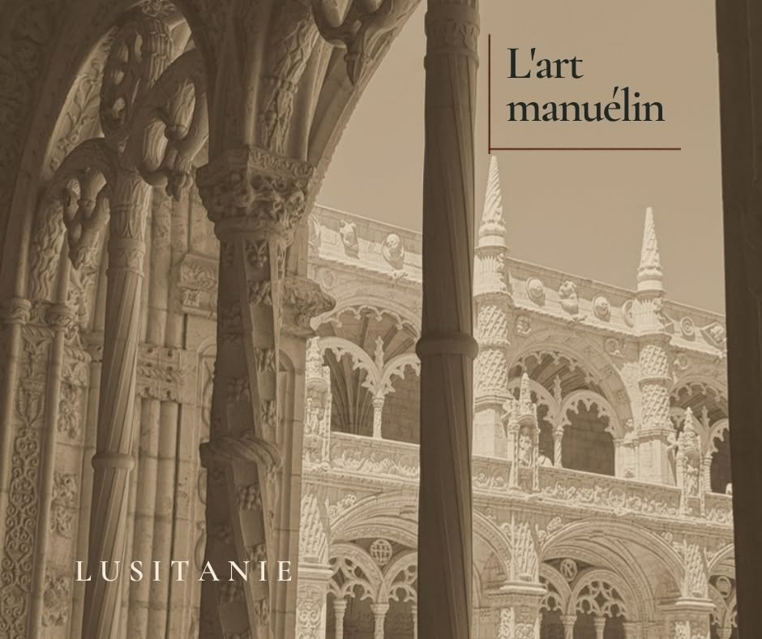
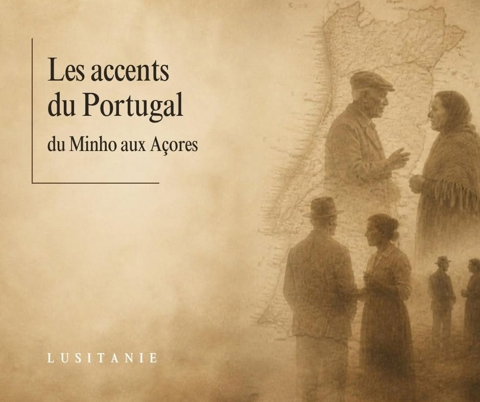
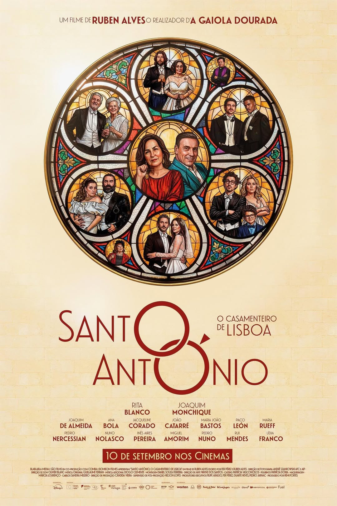
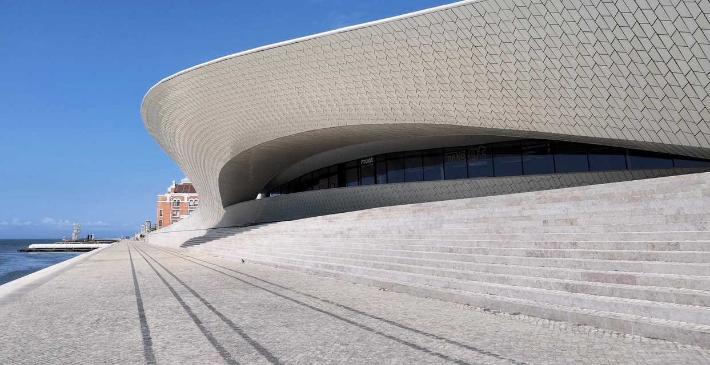
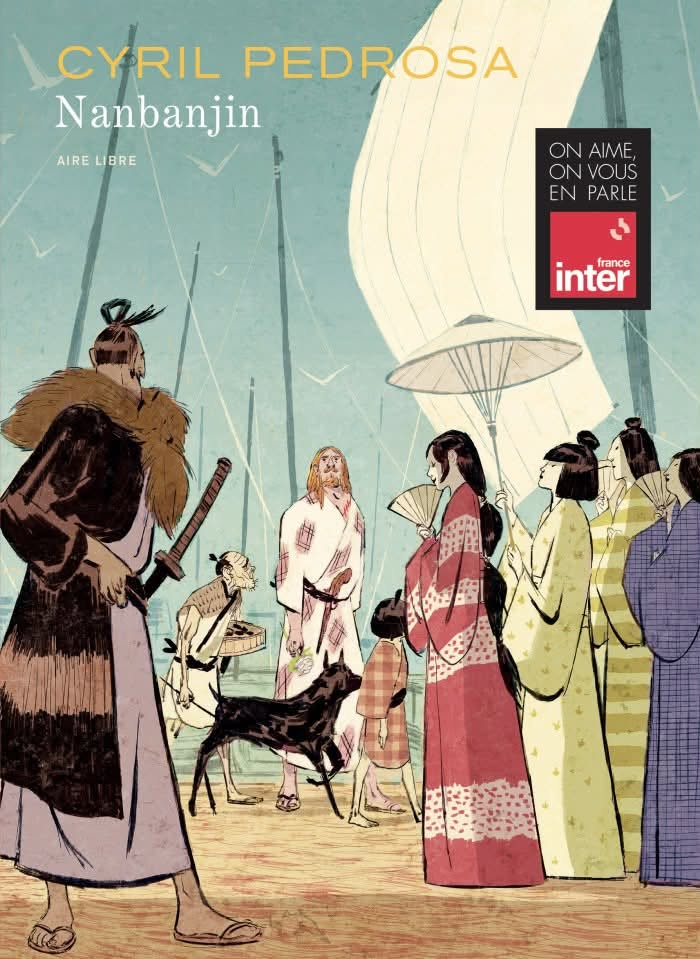
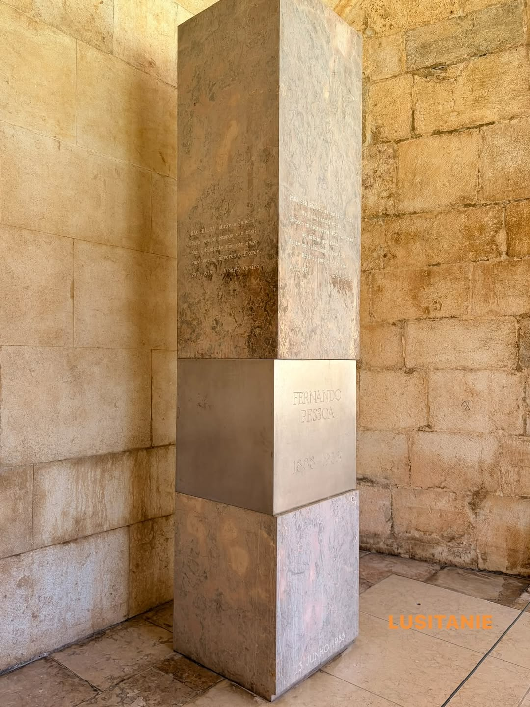

Culture
15 articles
Il y a 130 ans naissait Leitão de Barros, pionnier du cinéma portugais
A Severa, Maria do Mar, les marches populaires : le parcours d'un pionnier du cinéma portugais.
CultureAgustina Bessa-Luís (1922-2019), romancière de « La Sibylle » et figure majeure des lettres portugaises
Née le 15 octobre 1922 à Vila Meã, près d'Amarante, Agustina Bessa-Luís est l'une des grandes romancières portugaises du XXe siècle. En près de soixante-dix ans d'écriture, elle a laissé plus de cinquante ouvrages.
CultureAntónio Soares dos Reis, le sculpteur de « L'Exilé »
Né le 14 octobre 1847 à Vila Nova de Gaia, António Soares dos Reis est considéré comme le grand rénovateur de la sculpture portugaise du XIXe siècle. Une œuvre, surtout, a fixé son nom…

L'art manuélin
L'expression « style manuélin » ne date pas du règne qui lui a donné son nom.

Accents du Portugal : du Minho aux Açores, ce qui distingue les parlers régionaux
Le Portugal est petit par sa superficie, mais sa langue ne sonne pas de la même façon à Viana do Castelo et à Faro, à Lisbonne et à Ponta Delgada.

« Santo António, o Casamenteiro de Lisboa » : Rita Blanco et Joaquim Monchique dans la nouvelle comédie de Ruben Alves
Treize ans après La Cage dorée, Ruben Alves retrouve Rita Blanco, l'inoubliable Maria Ribeiro, concierge parisienne au cœur du film qui avait attiré plus d'un million de spectateurs en France.
CulturePortugais et lusodescendants dans la fiction française : du regard extérieur au récit de l'intérieur
Depuis près de soixante ans, la fiction française raconte les Portugais de France.

Le MAAT a 10 ans
Le 5 octobre 2016, une vague blanche se posait au bord du Tage, à Belém. Le MAAT, musée d'art, d'architecture et de technologie de la Fondation EDP, ouvrait ses portes au public.

Nanbanjin : Cyril Pedrosa et Taiyō Matsumoto racontent la rencontre du Portugal et du Japon
Un livre qui se lit dans les deux sens, paru le 4 septembre chez Dupuis.

Le tombeau de Fernando Pessoa au Mosteiro dos Jerónimos
Dans le cloître manuélin du Mosteiro dos Jerónimos, à Belém, les touristes s'arrêtent souvent sans le savoir devant l'un des monuments les plus singuliers de Lisbonne : le tombeau de Fernando Pessoa.

Saudade du futur
Non plus la nostalgie du passé — le manque de ce qui n'a pas encore eu lieu. Un concept qui définit le Portugal de demain.

Un pays de poètes
Chaque époque a produit un poète. Comme si le Portugal ne pouvait pas traverser le temps sans laisser des vers derrière lui.

Aquí — le Portugal à Cannes
Tiago Guedes adapte Coetzee. 203 minutes. Le Nobel dans la salle. Le cinéma portugais sur la Croisette.

Camões — une vie de roman, une épopée immortelle
Soldat borgne, naufragé, exilé dix-sept ans en Asie. Et Os Lusíadas — l'épopée nationale qui a traversé les siècles.

Fernando Pessoa — l'homme aux mille visages
Il a inventé plusieurs poètes à la place d'un seul. Un siècle après sa mort, il reste le plus grand mystère de la littérature portugaise.